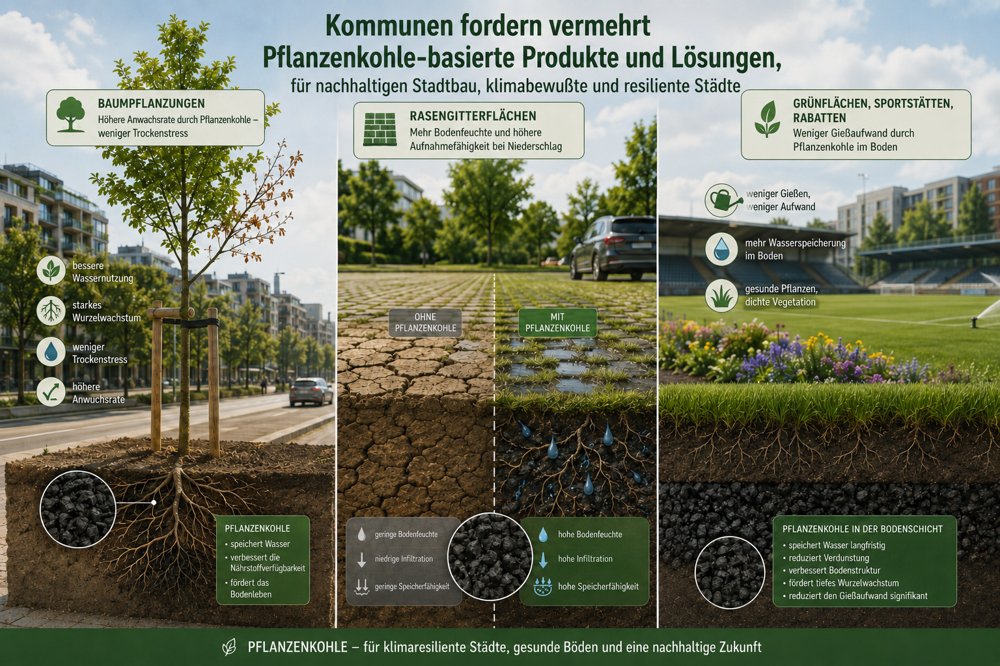
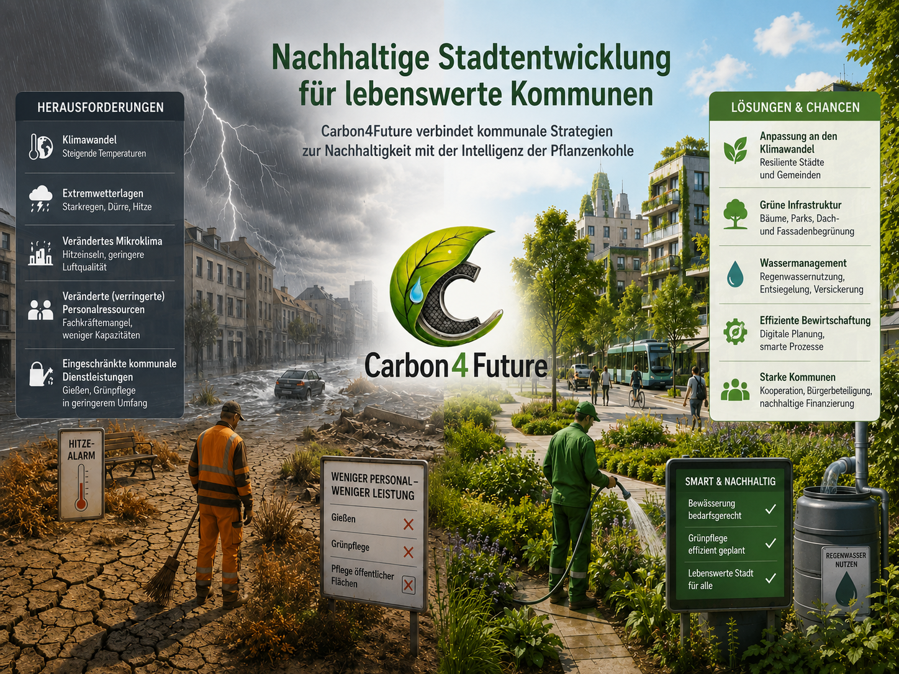
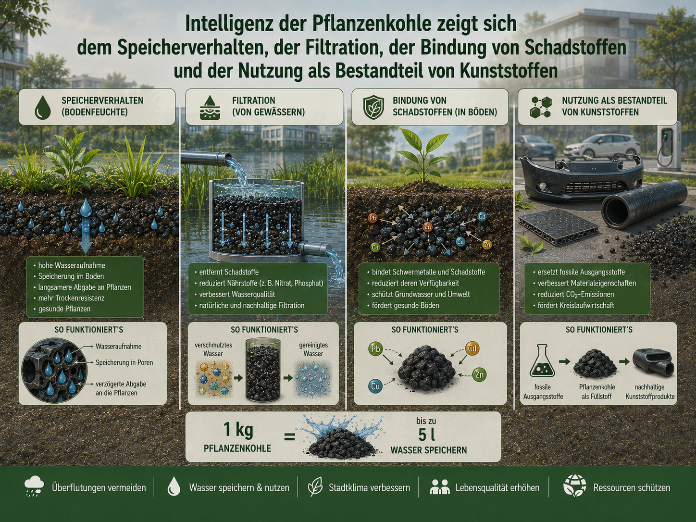
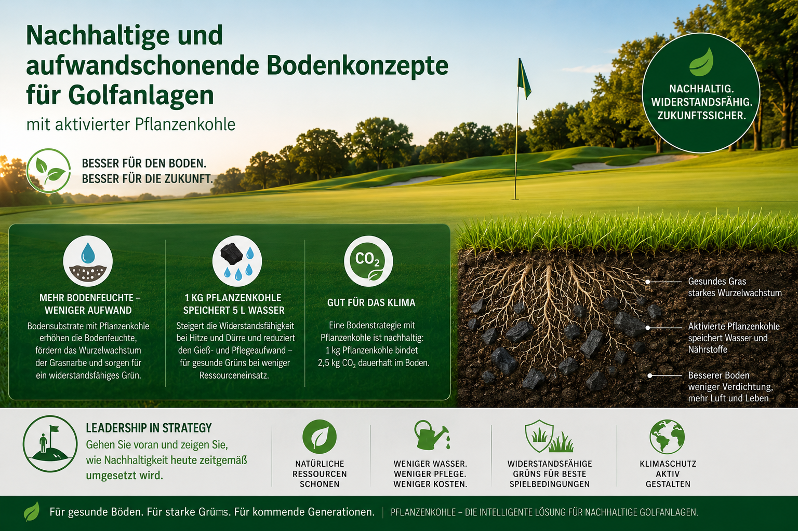
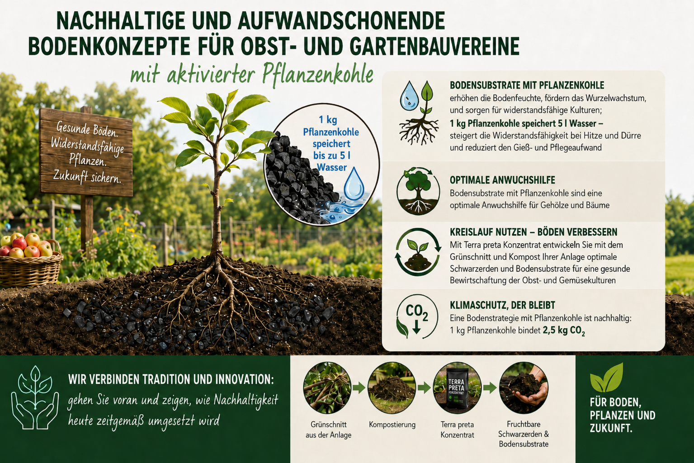
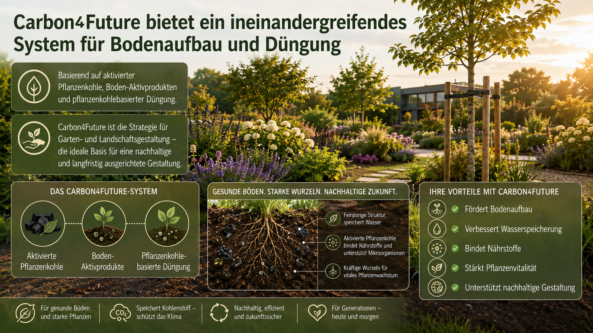

← Zurück zu Partner
// Infografik-Galerie
Anwendungsbereiche im Detail.
Aktivierte Pflanzenkohle wirkt überall dort, wo Boden, Wasser und Wachstum eine Rolle spielen. Klick dich durch die Bereiche – für jeden gibt es eine eigene Infografik.
Pflanzring aktiv für starke Stadtbäume – sicherer Anwuchs, kräftige Wurzeln

Pflanzenkohle-basierte Lösungen für klimaresiliente Kommunen

Nachhaltige Stadtentwicklung für lebenswerte Kommunen

Intelligenz der Pflanzenkohle – Speicherung, Filtration, Bindung

Nachhaltige Bodenkonzepte für Golfanlagen

Partnerschaft für gesunde Bienen, blühende Vielfalt und fruchtbare Böden
Nachhaltige Bodenkonzepte für Obst- und Gartenbauvereine

Ausgelaugte Böden, schwaches Pflanzenwachstum, Trockenheit – die Herausforderung
Das ineinandergreifende System für Bodenaufbau und Düngung

Das Carbon4Future Sortiment im Überblick – torffrei, regional, erklärbar

1
/
11
Dein Bereich nicht dabei?
Wir entwickeln laufend neue Anwendungen mit aktivierter Pflanzenkohle. Schreib uns kurz, was du planst – wir prüfen, was passt.
Beratung anfragen →